Review the business action recording by clicking the appropriate
event box, clicking the
 button and manually typing the new value.
button and manually typing the new value.
Telepath
User Guide
Version
COPYRIGHT NOTICE
© 2014Hybrid Application Security, Inc. All Rights Reserved.
This document is for informational purposes only. Hybrid Application Security, Inc. makes no warranties, expressed or implied. No part of this document may be used, disclosed, reproduced, transmitted, transcribed, stored in a retrieval system, or translated into any language in any form or by any means without the written permission of Hybrid Security, Inc.
Information in this document is subject to change without notice and does not represent a commitment on the part of Hybrid Security, Inc.
The software described in this document is furnished under a license agreement. The software may be used only in accordance with the terms of this agreement.
This document contains proprietary and confidential information of Hybrid Security, Inc., and is intended solely for the use of authorized Hybrid Security customers. The information furnished in this document is believed to be accurate and reliable. However, no responsibility is assumed by Hybrid Security, Inc. for the use of this material.
TRADEMARK ATTRIBUTIONS
All other brand and product names are trademarks or registered trademarks of their respective owners.
Portions of the software described in this document have been developed by the following third parties, and their respective rights are listed below. Note that some of these products in turn incorporate software developed by additional third parties.
|
Third Party Product |
Developer |
|
Arbor |
|
|
Bro |
|
|
Boost |
|
|
FamFamFam |
|
|
Gulp |
|
|
JIT |
|
|
JSON |
|
|
LibMySQL |
|
|
LibPCAP |
|
|
MaxMind |
|
|
Mini-XML |
|
|
Nokia OVI Maps |
|
|
OpenSSL |
|
|
Oracle MySQL |
|
|
Sencha |
|
|
Zlib |
CONTACT INFORMATION
Email: info@hybridsec.com
Phone: +1 (650) 319-7389
Installation and Initial Configuration 7
Installing Telepath repository 9
Running Configuration Utility 11
6.Starting and Stopping Telepath 17
8.Backing Up and Restoring the Telepath Database 17
9.Telepath in a VMware Environment 18
Allocating Hardware Resources 18
Configuring the Virtual Switch 18
10.Starting the Telepath GUI 21
11.Telepath Status Indicators 22
13.Defining Rule Categories 25
Editing an Existing Category 26
Deleting an Existing Category 26
Bot-Intelligence Criterions 36
Editing an Existing Criterion 37
Deleting an Existing Criterion 37
Filtering the Alerts Display 44
Web Application - Nodes List 65
Web Application - Authentication 69
This publication is intended for administrators tasked with installing and configuring Hybrid Security Telepath. A basic familiarity on the part of the reader with networking and database concepts and tools is assumed.
Hybrid Security Telepath monitors the behavior of all web application users, both inside and outside the organization.
Telepath uses advanced artificial intelligence algorithms to build profiles of user behavior, adjusted over time according to the dynamic history of each user’s activities. Telepath learns the “rules of the game” unique to each web application, and alerts administrators when it detects suspicious behavioral scenarios.
Telepath monitors web traffic passing through a switch configured to mirror traffic to the Telepath server.
Installation and Initial Configuration
This publication is intended for administrators tasked with configuring and installing Hybrid Security Telepath. A basic familiarity on the part of the reader with networking and database concepts and tools is assumed.
Hybrid Security Telepath monitors the behavior of all web application users, both inside and outside the organization.
Telepath uses advanced artificial intelligence algorithms to build profiles of user behavior, adjusted over time according to the dynamic history of each user’s activities. Telepath learns the “rules of the game” unique to each web application, and alerts administrators when it detects suspicious behavioral scenarios.
Telepath monitors web traffic passing through a switch configured to mirror traffic to the Telepath server.
|
|
For information about installing and running Telepath in a VMware environment, see Error: Reference source not found. |
The minimum hardware requirements for the Telepath server are the following:
32 GB RAM
8 core CPU
The disk space required by Telepath depends on the number of monitored sessions and the period of time you need to store information online before archiving (backing up).
You can estimate your disk requirements based on the following “rule of thumb”:
An average-sized HTTP request requires about 1.5 KB of disk space, or about 150 GB for 100 million requests.
Your requirements may vary depending on the specific characteristics of your web traffic.
The Telepath GUI runs in the following supported browsers:
Google Chrome
Mozilla Firefox
Internet Explorer
It is recommended that you use the latest version of the browser.
Before installing and configuring Telepath, you will perform the following tasks, which are described in detail in the next sections:
Install a supported version of Ubuntu (12 , 13 or 14) on the Telepath server.
Install MySQL 5 or above on the Telepath server.
|
|
The Telepath server must have access to the Internet for this process. |
To install Ubuntu:
Log in to the Telepath server machine as root.
Download the 64-bit version of one of the following Ubuntu OS server versions:
Precise (12)
Raring (13)
Trusty (14)
Install the Ubuntu OS server you just downloaded.
|
|
The Telepath server must have access to the Internet for this process. |
To install MySQL:
Log in to the Telepath server machine as root.
Download MySQL 5 or above.
Install the version you just downloaded.
The figure below depicts a network configuration in which the Telepath server monitors traffic to the web servers. The critical issues are that:
The Telepath server is positioned so that it can monitor all the relevant traffic.
It is not possible to initiate a connection to the Telepath server from outside the management LAN.
The Telepath server can initiate access to the Hybrid Security site through the management LAN in order to periodically download Telepath intelligence, for example, the IP addresses of malicious bots, hacking tools, blacklisted IP addresses, etc.
Since every network is unique, you should regard the depicted configuration only as a suggestion.
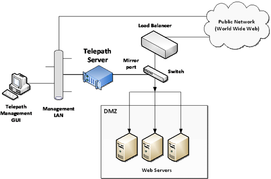
Typical Network Configuration
Installation is a two-step process: installing the repository and running the configuration utility.
Log into the Telepath server machine as root.
|
|
The Telepath server must have access to the Internet for downloading and installing Telepath. |
Install the Telepath repository by executing one of the following commands, depending on the OS version.
Ubuntu 12 (Precise)
|
grep 192.241.171.59 /etc/apt/sources.list || echo "deb http://192.241.171.59/repo/deb precise main" >> /etc/apt/sources.list |
Ubuntu 13 (Raring)
|
grep 192.241.171.59 /etc/apt/sources.list || echo "deb http://192.241.171.59/repo/deb raring main" >> /etc/apt/sources.list |
Ubuntu 14 (Trusty)
|
grep 192.241.171.59 /etc/apt/sources.list || echo "deb http://192.241.171.59/repo/deb trusty main" >> /etc/apt/sources.list |
CentOS/RHEL 6.5 (Final)
|
echo -e "[telepath]\nname=Telepath\nbaseurl=http://hybridsec.com/repo/yum\ngpgcheck=0" > /etc/yum.repos.d/Telepath.repo |
Install the Telepath server by executing the following command:
|
yum install telepath |
Next, run the configuration utility.
Select the interfaces (eth0, eth1, etc.) to which the sniffed traffic will be directed.
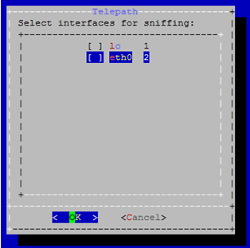
Enter the location of the Telepath database. Specify the IP address of the MySQL server.
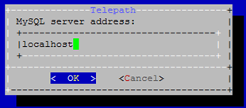
Specify the MySQL port. (Default is 3306).
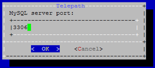
The MySQL server administrator (root) user name and password.
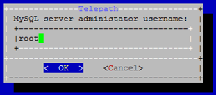
Configure your Telepath administrator username and password.
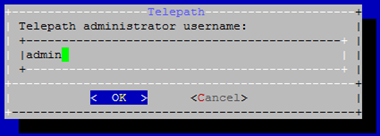
Physically install (“rack”) the Telepath server into your internal network. See on page 9 for one possible configuration.
Connect the sniffing interface you specified during the Telepath installation (step Error: Reference source not found above) to the switch whose traffic will be mirrored.
On another interface, connect the Telepath server to the management LAN.
Power up and boot the Telepath server.
Confirm that the Telepath server can be accessed from the management LAN, using standard network tools such as the ping command.
Connect the switch to the Telepath server’s sniffing interface.
Configure the switch so that it copies the relevant traffic to the Telepath server.
You must configure the switch so that traffic you want Telepath to monitor is copied to the Telepath server.
Different switch manufacturers use different terminology for this functionality: port mirroring, TAP, SPAN, etc. For information on how to configure this functionality for your switch, refer to its documentation.
Using standard network tools, confirm that the switch is copying the relevant traffic to the Telepath server.
Next, configure Telepath as appropriate.
This section guides you on how to customize the Telepath configuration to your network and your specific requirements.
|
|
For best results, use the latest Google Chrome or Firefox browser. |
To configure Telepath:
From your web browser, go to the URL which was displayed at the end of the installation (of the form http://<IP address>/telepath). The Login window is displayed.
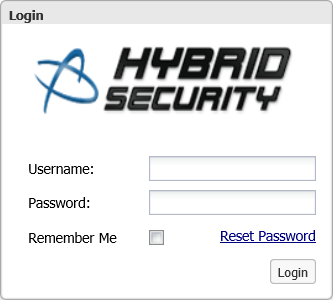
In the Login window, enter your credentials (User-Name and Password) and click Sign In.
In the Telepath Status pane, confirm that:
Engine is On.
Operation Mode is Training.
If the values are different, you can change them as follows:
|
Field |
Where to change |
|
Engine/Sniffer status |
Click the Telepath Status On / Off button in the top bar. |
|
Operation Mode |
Settings tab > Mode option |
Click the Settings tab.
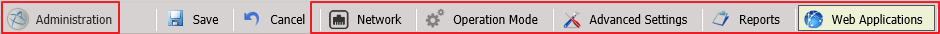
Settings tab options
|
|
If you change any of the settings, remember to click Save at the top of the Settings tab. |
In the Settings tab, click Network.
|
|
In all the Network panes, you can add an item to a list by entering its information and clicking Add, delete an item by selecting it and clicking the trash icon and configure an item by selecting it and clicking the settings icon. |
If the Telepath server is behind a load balancer, enable Web servers are behind a load balancer and add the load balancer’s IP addresses in the Load Balancers pane.
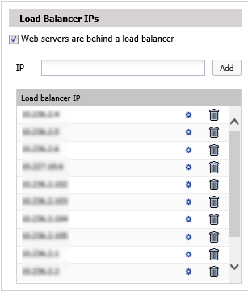
The Load Balancer Headers pane displays the header fields added by the load balancer which specify, among other information, a packet’s original IP address. You can change this list if required.
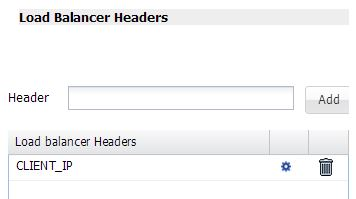
The User Agent Ignore List pane displays the user agents (typically” harmless’ bots) whose traffic Telepath should ignore. You can change this list if required.
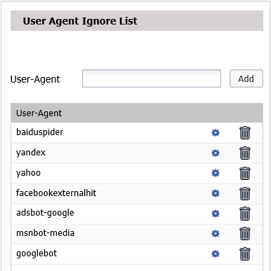
The IP Whitelist pane displays the IP addresses from which Telepath should ignore all traffic. You can change this list if required.
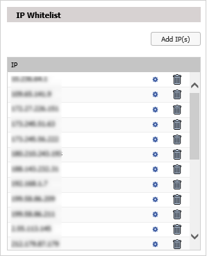
The Extension Ignore List pane displays the file extensions (for example, of graphic files) which Telepath should ignore. You can change this list if required.
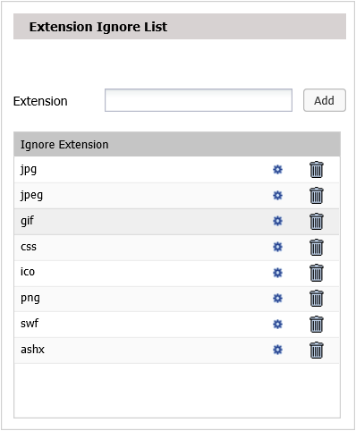
If your management LAN’s Internet traffic requires a proxy server, then in the Proxy Configuration pane, set:
Proxy to On
IP Address to the corporate proxy server’s IP address
Port to the corporate proxy server’s proxy port
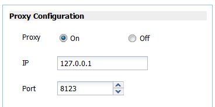
In the Settings tab (Error: Reference source not found), click Web Applications.
By the time you reach this point in the configuration process, Telepath will have been monitoring traffic long enough to have learned a list of your web applications, which is displayed in the left pane.
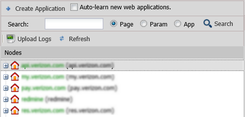
To edit an application, select it in the list and enter the data in the right pane. You can specify authentication and SSL parameters by clicking the buttons on the bottom.
To start the Telepath server, execute the following command:
|
telepath start |
To stop the Telepath server, execute the following command:
|
telepath stop |
To completely uninstall the Telepath server, execute the following command:
|
apt-get remove --purge telepath |
Telepath stores its data in a MySQL database. The DB name is “Telepath”.
|
|
It is the user’s responsibility to ensure that the database files are periodically backed up. |
Telepath stores logs in its MySQL database. The database files are located in the /opt/telepath/db/sql/telepath directory. The file names include the date range for the logs.
At regular intervals, Telepath closes the current log files and opens new ones. The Telepath GUI has access to all the database files on the disk, from the currently open database files as well as from earlier database files. This file division is transparent to the user.
When disk usage reaches 95% of available space, Telepath deletes the oldest database files in order to be able to allocate space for new data. It is essential that you monitor disk usage and regularly backup the database files (using the standard MySQL administration tools) so that no data are lost.
To avoid data loss, go to the /opt/telepath/db/sql/telepath directory and make sure you back up the .MYI and .MYD files beginning with the following filenames (e.g. request_scores_from_2013_11_22_10_39_18_to_2013_11_27_14_44_02.MYI):
Request_scores_from_
Attribute_scores_from_
Alerts_from _
Top_suspects_from_
The Telepath Knowledgebase consists of the information Telepath has learned about the web applications and users it monitors. The Knowledgebase files are stored in the /opt/telepath/db/kb directory.
In a VMware environment, you install and configure Telepath on one of the virtual machines in the same way that you would on a physical machine. There are however a number of considerations unique to the virtual environment.
In a VMware environment, all hardware resources are shared among the virtual machines. In order to ensure Telepath’s optimal performance, you must reserve adequate hardware resources exclusively for its use, as described in on page 7.
Refer to the VMware documentation for information on how to reserve hardware resources.
You must configure the virtual switch as follows:
Connect to the ESX server using the vSphere client software.
In the vSphere client main menu, go to the root of the virtual machines tree.
Click the Configuration tab in the upper menu.
In the Hardware pane, select Networking.
To the right of the virtual switch, click Properties.
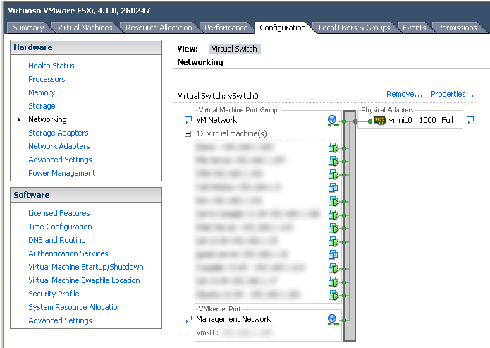
Select the switch you want to configure and click Edit.
In the Properties window, click the Security tab.
Under Policy Exceptions, set Promiscuous Mode to Accept.
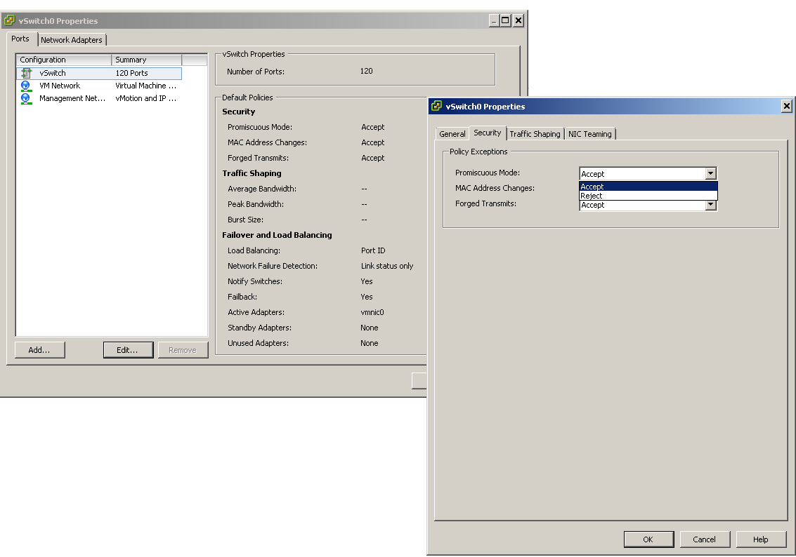
Click OK.
|
|
For best results, please use the latest Google Chrome or Firefox browser. |
To start the Telepath GUI:
Open your web browser and go to http://<IP address>/telepath, where <IP address> is the interface of the Telepath server that faces the management LAN. The Login window is displayed.
In the Login window, enter your credentials (User-Name and Password).
You can optionally select Remember me to have Telepath automatically log you in the next time you open the application. To reset your password, click Reset Password and follow the directions.
Click Login.
|
|
After 3 successive failed login attempts, Telepath will lock out for 15 minutes. |
If the login is successful, the Telepath GUI is displayed with the Dashboard tab initially in focus. The Telepath GUI has 6 tabs, as follows:
|
Tab |
For more information, see |
|
Dashboard |
Error: Reference source not found |
|
Alerts |
Error: Reference source not found |
|
Investigate |
Error: Reference source not found |
|
Business Actions |
Error: Reference source not found |
|
Rules |
Error: Reference source not found |
|
Settings |
Error: Reference source not found |
|
|
The system does not automatically start after install. Make sure you turn on the engine by clicking the Off button in the tabs bar or issuing "telepath start" via command-line. |
The tabs bar indicates the Telepath engine and sniffer's activation status, and the system's operation mode.
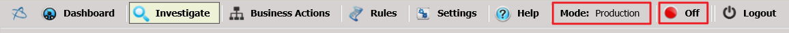
Dashboard - Telepath Status indicators
|
Field |
Description |
||
|
Learning Time Left |
(Displayed in Training operation mode) If Operation Mode is Learning or Hybrid, this is the time left until learning stops. To change the times during which Telepath learns when in Hybrid mode, click the Configure Schedule in the Operation Mode window of the Settings tab. |
||
|
On/Off button (Engine/sniffer status button) |
Indicates whether the Telepath engine and sniffer are On or Off, that is, whether Telepath is monitoring traffic. To change the engine and sniffer status, click the engine/sniffer status button (red circle) in the tabs bar. For the engine version, click Help > About. |
||
|
|||
|
Mode |
The operation mode can be:
You can change the value of Operation Mode in the Operation Mode window in the Settings tab. |
||
Rules define behavior patterns for which Telepath issues an alert.
For example, a rule might define conditions, or criterions, which indicate whether the user’s IP address has changed in the course of the session. Criterions can be either pre-defined or user-defined.
There are three kinds of criterions:
Pattern and behavior criterions –Pattern criterions predefined in Telepath which are inaccessible to Telepath administrators. Pattern criterions are defined or updated by Hybrid Security while behavior criterions look for anomalous behavior based on different user behavior perspectives, including queries, navigation speed, geographic location or navigation pattern – which pages are visited.
These criterions are applied only after learning has completed.
Hybrid Intelligence criterions – criterions predefined in Telepath which Telepath administrators can view. These criterions are periodically updated by the Hybrid Security intelligence cloud.
User-defined criterions – defined by Telepath administrators.
When all the criterions of a rule are matched for a session, we say that we have a “match” on the rule, and an alert is generated.
There are five types of rules, as follows:
|
Criterion Type |
Description |
|
Parameter Rule |
A rule which relates to anomalies in a session’s parameters. |
|
Behavior Rule |
A rule which relates to some characteristic of the session. |
|
Pattern Rule |
A rule which detects anomalous patterns in a session. |
|
Geographic Rule |
A rule which relates to anomalies in the geographic source of a session. |
|
Bot-Intelligence Rule |
A rule which detects the presence of bots rather than human users. |
Rules are arranged in categories. Each category contains any number of rules, and each rule contains any number of criterions.
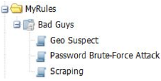
Rule with criterions
In the figure above, the category MyRules consists of the single rule Bad Guys, which consists in turn of three criterions: Geo Suspect, Password Brute-Force Attack and Scraping.
All the rules, except for disabled rules, are applied to all monitored traffic. Criterions within a rule are AND’ed, while rules and categories are OR’ed.
Example
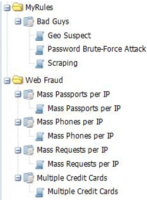
Rules structure
In the case of the two categories (MyRules and Web Fraud) shown above, a session is identified as anomalous if, for example:
There is a match on all of the criterions within the Bad Guys rule: Geo Suspect, Password Brute-Force Attack and Scraping.
There is a match on any of the following rules: Mass Passports per IP, Mass Phones per IP, Mass Requests per IP, or Multiple Credit Cards.
Because each of these rules has only one criterion, matching the criterion means matching the rule, and because rules are OR’ed, it is enough for any criterion to be matched for Telepath to identify the session as anomalous.
On the other hand, a session is not identified as anomalous if, for example:
There is a match on two of the following criterions: Geo Suspect, Password Brute-Force Attack and Scraping.
Because the criterions in the Bad Guys rule are AND’ed, there is no match on the rule unless all the criterions in the rule are matched.
To summarize,
To define a criterion that identifies an anomalous session even if no other criterions are matched, define that criterion as the only one in its rule.
To define a set of criterions that identify an anomalous session only if all the criterions are matched, define a rule that consists of all these criterions but no additional ones.
|
|
Telepath’s predefined rules are grouped in the predefined Hybrid Rules category. You can change these rules, but the next time Telepath is updated, your changes will be lost. |
To define a new category:
Click the Rules tab.
In the Rules pane on the left, click Add.
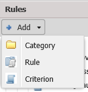
From the menu, select Category.
In the New Category window, enter a Category Name.
Click Create.
To edit an existing category:
Click the Rules tab.
In the Rules pane on the left, select a category.
Click Edit.
From the menu, select Category.
In the Edit Category window, enter a new Category Name.
Click Create.
To delete an existing category:
Click the Rules tab.
In the Rules pane on the left, select a category.
Click Delete.
In the Delete Category window, confirm the deletion.
To define a new rule:
Click the Rules tab.
In the Rules pane on the left, click Add.
From the menu, select Rule.
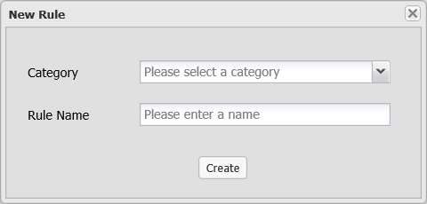
In the New Rule dialog, enter the following data:
|
Field |
Description |
|
Category |
The name of the category to which the new rule belongs. |
|
Rule Name |
The name of the new rule. |
Click Create and then click OK in the confirmation window that appears.
In the Rules pane on the left, select the rule you just created.
Enter the rule's parameters as defined in Error: Reference source not found.
To edit an existing rule:
Click the Rules tab.
In the Rules pane on the left, select a rule.
Click Edit.
Enter the rule's parameters as defined in Error: Reference source not found.
Click Save.
To disable a rule:
Click the Rules tab.
In the Rules pane on the left, right-click a rule and select Disable all criteria.
Click OK in the confirmation window that appears.
To delete an existing rule:
Click the Rules tab.
In the Rules pane on the left, select a rule.
Click Delete.
In the Delete Rule window, confirm the deletion.
A rule's parameters are as follows:
|
Field |
Description |
||
|
Name |
The name of the new rule. |
||
|
Actions |
The action to be taken – in addition to alerting – if the rule is matched, that is, if all the enabled criterions in the rule are matched. Enable one or more of the following options:
Note the Log option is always enabled.
|
||
|
Parameters to show upon alert for the rule |
To add a parameter that will be included in the alert data when the rule is matched, click Add and select the parameter in the Parameters window by navigating to the application page, selecting parameters from the Headers, GET or POST lists and clicking Add. The new parameters will appear for alerts matching this rule only. |
To define a new criterion:
Click the Rules tab.
In the Rules pane on the left, click Add.
From the menu, select Criterion.
The Rules Wizard opens, presenting you with a series of screens where you will specify the parameters that define the criterion.
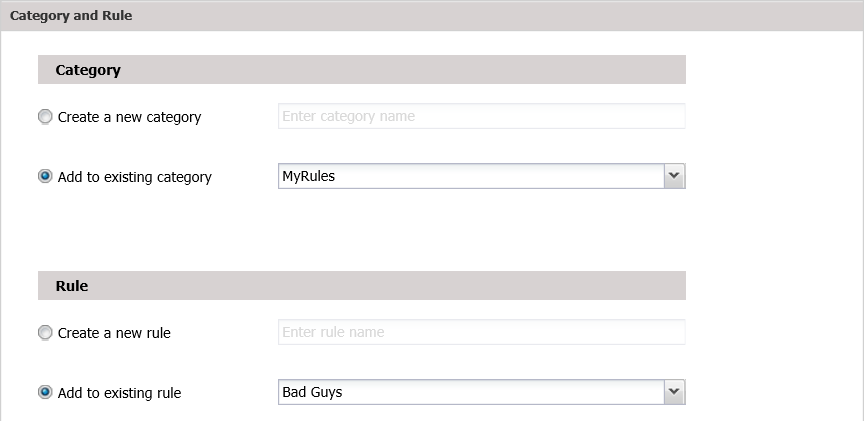
In the Category and Rule screen, specify the category to which the new rule belongs and the rule itself.
|
Field |
Description |
|
Category |
Select one of the following:
|
|
Rule |
Select one of the following:
|
Click Next.
In the Rule Information screen, enter the following data:
|
Field |
Description |
|
Criterion Name |
A descriptive name. |
|
Description |
A description of what the criterion does and its purpose. |
|
Owner |
The name of the rule’s author. |
|
Criterion Type |
Select one of the following from the dropdown menu:
Depending on which value you select, the wizard will display a different series of windows. |
|
Application |
The criterion applies only to the specified application. |
|
Source IP |
The criterion applies only to the specified source IP address. |
|
User |
The criterion applies only to the specified user. |
|
Trigger alert after … criterion matches |
An alert will be triggered only after the criterion has been matched the specified number of times during the session. |
|
Score Type |
Select Numeric or Literal and then select a value. |
Click Next.
If you selected Parameter under Criterion Type, continue to Error: Reference source not found.
If you selected Behavior Rule under Criterion Type, continue to Error: Reference source not found.
If you selected Pattern Rule under Rule Type, continue to Error: Reference source not found.
If you selected Geographic Rule under Rule Type, continue to Error: Reference source not found.
If you selected Bot-Intelligence Rule under Rule Type, continue to Error: Reference source not found.
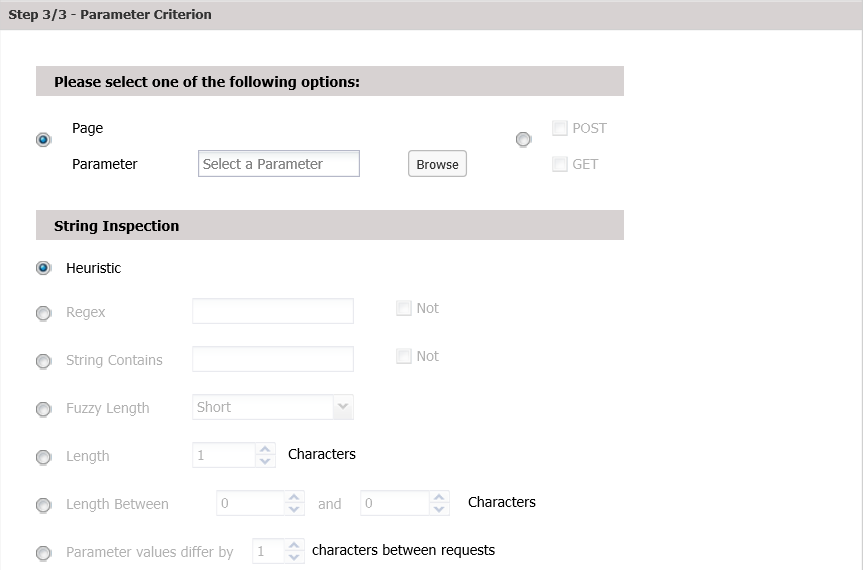
Parameter Criterion screen
In the Parameter Criterion screen, select one of the following:
|
Field |
Description |
|
Page / Parameter |
Select the parameter in the Parameters window by navigating to the application page, selecting a parameter from the Headers, GET or POST lists and clicking Add. |
|
POST / GET |
Check POST and/or GET and specify a regular
expression. A match occurs when regular expression matches any
GET/POST parameter’s value, as indicated. |
|
String Inspection - Check one of the values below and enter the corresponding data, which specify when a match occurs. |
|
|
Heuristic |
A match occurs when Telepath identifies a suspicious pattern based on its internal heuristic algorithms. |
|
Regex |
A match occurs when regular expression matches the parameter’s
value. |
|
String Contains |
A match occurs when the value in String Contains is a
substring of the parameter’s value. |
|
Fuzzy Length |
Select a “fuzzy” value from the dropdown menu. |
|
Length |
A match occurs when the parameter is exactly Length characters long. |
|
Length Between |
A match occurs when the parameter length is within the specified range. |
|
Parameter values differ by characters between requests |
A match occurs when the value strings of successive occurrences of the parameter differ from each other by one character (e.g. “AAA”, “AAB”, “AAC”) of the specified length. This parameter is intended for detecting scraping attacks. |
Click Submit to finish defining the criterion.
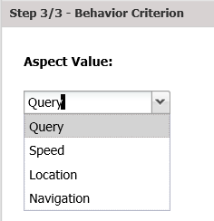
Behavior Criterion screen
In the Behavior Criterion screen, enter the following data:
|
Field |
Description |
|
Aspect Value |
Select one of the following from the dropdown menu:
|
|
Personal |
The criterion is matched based on the user’s personal history. Otherwise, the match is based on the typical behavior of all users. |
Click Submit to finish defining the criterion.
In a pattern criterion, Telepath examines whether a parameter’s value changes across all sessions anchored by (originating from) the same IP address, session ID, device, user or other parameter.
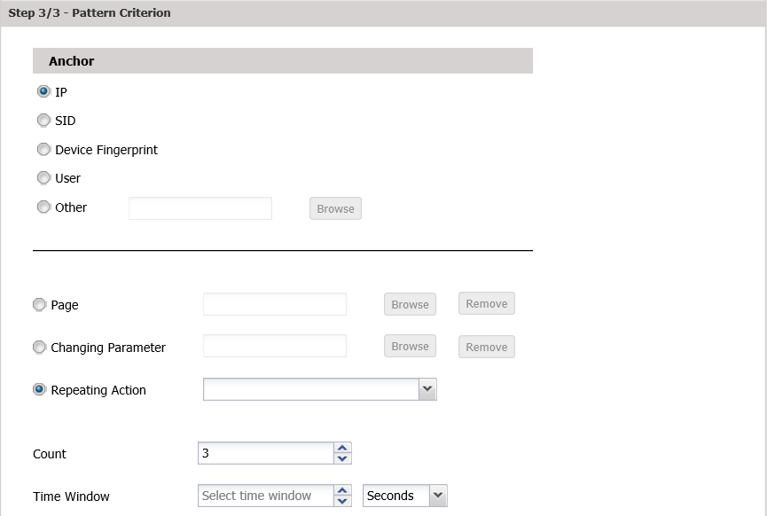
Pattern Criterion screen
In the Pattern Criterion screen, enter the following data:
|
Field |
Description |
|
Anchor |
Select one of:
|
|
Page |
An anomaly occurs when any the value of any parameter on this page changes. If selected,
Or, click Remove to delete a previously selected page. |
|
Changing Parameter |
An anomaly occurs when this parameter’s value changes. If selected,
Or, click Remove to delete a previously selected parameter. |
|
Repeating Action |
A criterion match occurs when the business action is repeated the defined number of times within the scope of the anchor. |
|
Count |
The number of changes (Count) within Time Window. |
|
Time Window |
Click Submit to finish defining the criterion.
A geographic criterion defines anomalies based a session’s geographic data.
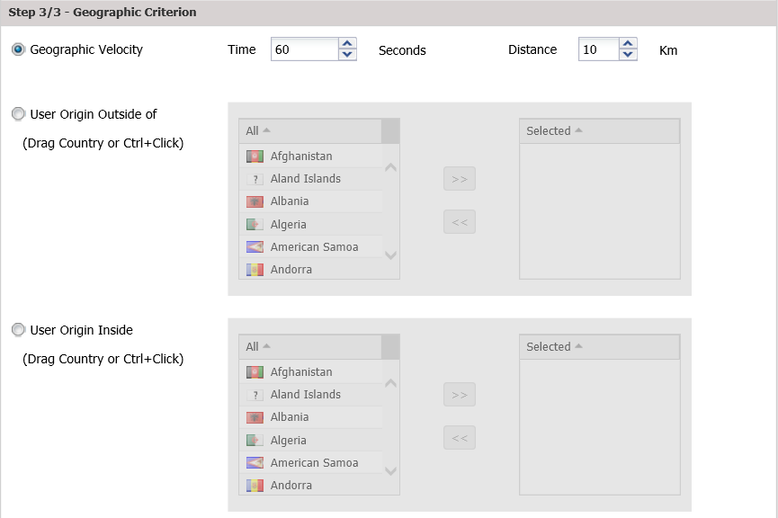
Geographic Criterion screen
In the Geographic Criterion screen, select one of the following options:
|
Field |
Description |
|
Geographic Velocity |
An anomaly occurs when the client’s location changes by more than Distance kilometers within Time seconds. |
|
User Origin Outside Of |
An anomaly occurs when the client’s origin is not one of the Selected countries. To move a country between the Selected list and the list on the left, select it and use the arrows or drag it to the other list. To select multiple countries, Ctrl-click each one individually. To select a range of countries, click the first one and Shift-click the last one. |
|
User Origin Inside |
An anomaly occurs when the client’s origin is one of the Selected countries. To move a country between the Selected list and the list on the left, select it and use the arrows or drag it to the other list. To select multiple countries, Ctrl-click each one individually. To select a range of countries, click the first one and Shift-click the last one. |
Click Submit to finish defining the criterion.
Bot-Intelligence criterions identify anomalous behavior based on the known behavior of bots.
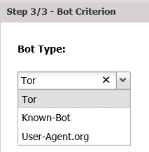
Bot Criterion screen
In the Bot Criterion screen, , select the Bot-Type:
|
Field |
Description |
|
Bot-Type |
Select one of the following bots: Tor – The Tor bot. Known-Bot – IP address known to harbor malicious behavior, based on cloud intelligence gathered by Hybrid Security. User-Agent.org – Bots cataloged by this security information site. |
Click Submit to finish defining the criterion.
|
|
A newly-defined criterion is enabled by default. |
To disable a criterion:
Click the Rules tab.
In the Rules pane, select the criterion to disable.
Unselect the Criteria Enabled checkbox in the right pane.
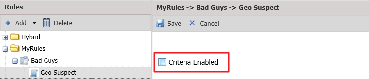
Click Save.
To edit an existing criterion:
Click the Rules tab.
In the Rules pane on the left, select a criterion.
Enter the rule’s parameters in the right pane.
Click Save.
To delete an existing criterion:
Click the Rules tab.
In the Rules pane on the left, select a criterion.
Click Delete.
In the Delete Criterion window, confirm the deletion.
The Telepath dashboard, which is displayed when you login successfully, presents an overview of Telepath’s monitoring status, and consists of the following panes:
|
Pane |
For more information, see |
|
Dashboard Settings |
Error: Reference source not found |
|
Attacks |
Error: Reference source not found |
|
Hot Spots |
Error: Reference source not found |
|
Attack Origins |
Error: Reference source not found |
|
Alert Trends |
Error: Reference source not found |
|
Top Suspects |
Error: Reference source not found |
|
Sessions |
Error: Reference source not found |
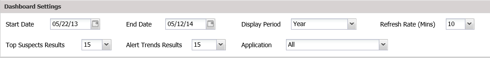
Dashboard - Settings pane
The table below describes the data displayed in the Telepath Settings.
|
Field |
Description |
|
Start Date |
You can change the time period to display in the dashboard in the following ways:
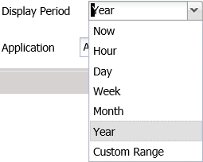 Now means in the last 10 minutes. The values displayed in these three fields are synchronized, so that, for example, if you change Display Period to Year, the values in Start Date and End Date change accordingly. |
|
End Date |
|
|
Display Period |
|
|
Refresh Rate |
The frequency at which the dashboard data are refreshed. |
|
Top Suspects Results |
The number of items displayed in the Top Suspects pane of the dashboard. |
|
Alert Trends Results |
The number of items displayed in the Alert Trends pane of the dashboard. |
|
Application |
The applications for which the dashboard displays data. |
If you change any of these settings, the changes will take effect only after you click Apply.
You can restore the default settings by clicking Reset.
The Attacks pane displays a column chart of the 10 most common attacks detected by Telepath.
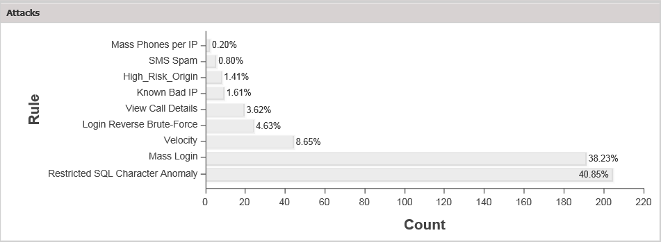
Dashboard - Attacks pane
If you hover over a column, the number of detected attacks is displayed. If you click a column, the relevant alerts are displayed in the Alerts tab (see Error: Reference source not found). You can return to the dashboard by clicking the Dashboard tab.
The Hot Spots pane displays a global map indicating the source locations of ALL frequent attacks detected by Telepath.
This feature requires the Telepath server to have firewall access to the URL api.maps.ovi.com.
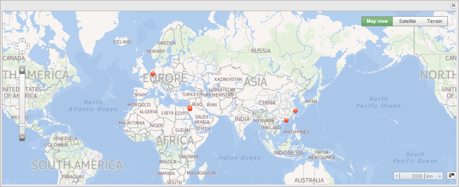
Dashboard - Hot Spots pane
If you hover over a hot spot, the geographic location, number of detected attacks and rule are displayed.
You can change the map view by clicking Map view (shown above) or Satellite or Terrain, or navigate in the map using the navigation icon , or change the map scale by clicking the scale icon 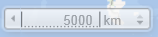.
The Attack Origins pane displays a column chart of the ten countries from which the largest number of attacks has been detected by Telepath.
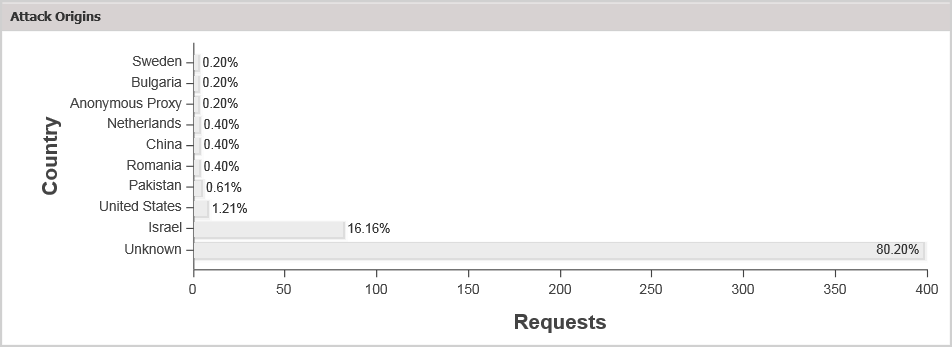
Dashboard – Attack Origins pane
If you hover over a column, the number of attacks originating from that country is displayed. If you click a column, the relevant alerts are displayed in the Alerts tab (see Error: Reference source not found). You can return to the dashboard by clicking the Dashboard tab.
The Alert Trends pane plots the number of alerts for each alert type presented in the Attack Origins pane over time. A legend is displayed to the left of the graph.
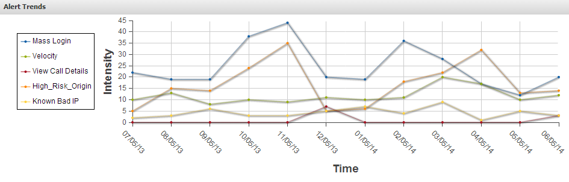
Dashboard – Alert Trends pane
The Top Suspects pane lists the IP addresses from which attacks most frequently originated, together with additional identification information.
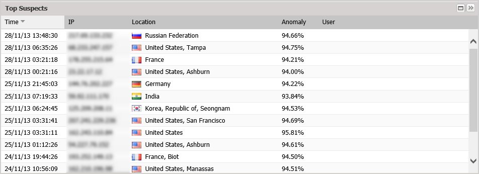
Dashboard – Top Suspects pane
You can re-sort the list by clicking the column headings.
Anomaly displays the percentage of connections from the IP address which have been identified as attacks.
For more options, right click a suspect and select the appropriate option:
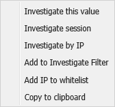
|
Option |
Description |
|
Investigate this value |
Display filter results for the selected value. |
|
Investigate session |
Display filter results for the session of the selected request. |
|
Investigate by IP |
Display filter results for the IP address of the selected request. |
|
Add to Investigate Filter |
Add the selected value to the filter, but do not display the results. |
|
Add IP to whitelist |
Add the request’s source IP address to the IP whitelist. |
|
Copy to clipboard |
Copy the text of the selected field to the clipboard. |
The Sessions pane plots the number of sessions monitored by Telepath over time.
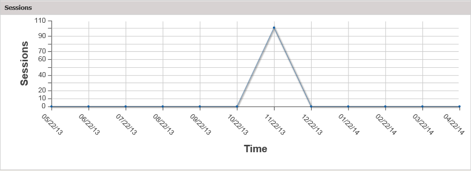
Dashboard – Sessions pane
The Alerts tab displays the alerts issued by Telepath when encountering anomalous behavior.
|
|
In order to receive email alerts, the SMTP Server must be configured. For syslog alerts, the Remote Syslog Server must be defined. Proxy Server and Report Schedule have been configured before defining business actions. |
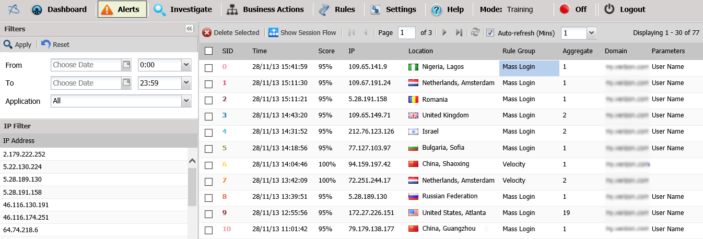
Alerts tab
The data displayed in the Alerts tab are described below. You can re-sort the list by clicking the column headings.
|
Field |
Description |
|
SID |
The ID of the session that triggered the alert. |
|
Time |
The date and time of the alert. |
|
Score |
The percentage of connections from the IP address that have been identified as attacks. |
|
IP |
The IP address from which the connection that triggered the alert. |
|
Location |
The country and city (if available) from which the session that triggered the alert originated. |
|
Rule |
The Rule that triggered the alert. |
|
Aggregate |
The number of times this alert was triggered during the session. |
|
Domain |
The application that was attacked. |
|
Parameters |
Identification details about the alert. For more information, see Error: Reference source not foundError: Reference source not foundParameters to show upon alert for the rule in the Error: Reference source not found section. |
At the top of the Alerts window, a toolbar is displayed.
|
Tool |
Description |
|
|
Delete the selected alert(s). |
|
|
Display the flow (the navigation from page to page) of the selected session. For more information, see Error: Reference source not found. |
|
|
Display the previous page. |
|
|
Display the first page. |
|
|
Display the next page. |
|
|
Display the last page. |
|
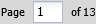 |
To display a specific page, enter the page number in the box. |
|
|
Refresh the data in the window. |
|
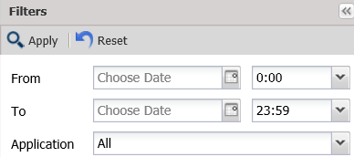 |
Filter the alerts (see Error: Reference source not found). |
|
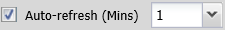 |
To specify how frequently the Alerts page will automatically be refreshed, select a value (in minutes) from the drop down menu. |
You can filter the alerts by time period and/or application.
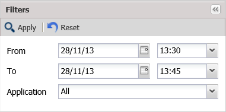
Search alerts window
Select time period and/or application and click Apply. To remove the filter, click Reset.
|
Tool |
Description |
|
From |
Display alerts detected within the specified time range. |
|
To |
|
|
Application |
Display alerts originating from the selected application. |
When you click the Show Session Workflow button in the Alerts toolbar, the selected alert’s session flow is displayed in a series of boxes from left to right.
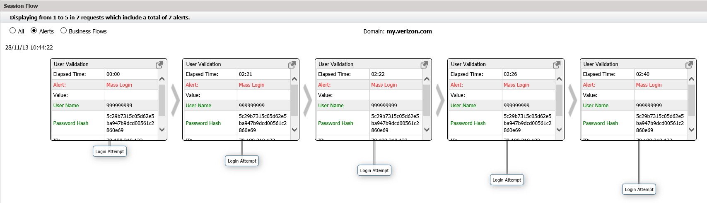
Show Session Workflow window
The data that triggered the alert is shown in red while aliases defined by the Telepath user are shown in green.
For additional options, right click a parameter within a session flow window.
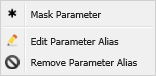
|
Option |
Description |
|
Mask Parameter |
Encrypt sensitive data such as passwords, email addresses, ID numbers |
|
Edit Parameter Alias |
Specify a different name for the selected parameter |
|
Remove Parameter Alias |
Reset the parameter name |
To add parameters to the session flow windows of an alert, see Error: Reference source not foundError: Reference source not foundParameters to show upon alert for the rule in the Error: Reference source not found section.
The following data are displayed by default:
|
Field |
Description |
|
Display options |
Select the appropriate option:
|
|
Elapsed Time |
Time that has passed since the start of the current view (events displayed in the Session Flow pane). |
|
Alert |
The Rule Type of the rule which triggered the alert. |
|
Value |
Additional data about the request. For example, a heuristically detected bot alert would display a value of high, low or medium, depending on the certainty of the alert. |
|
User Name |
The session user’s username. |
|
Password Hash |
The session user’s password. |
|
App |
The application for which the alert was issued is displayed at the top middle of the Session Flow pane. |
|
IP |
The IP address of the client. |
|
Date |
The times and dates of the current view are displayed above in the top left and top right of the Session Flow pane. |
|
Score |
The severity of the anomaly that triggered the alert. |
|
Page |
The page on which the alert occurred. |
|
user-agent |
String identifying the browser. |
In the Search Suspects Filter and Advanced panes of the Investigate tab, you can define a search on HTTP requests to be displayed in the Requests pane.
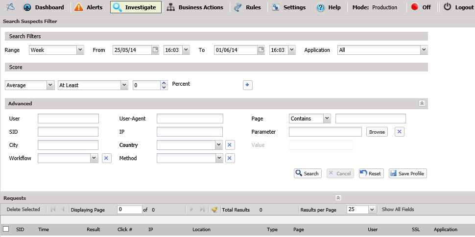
Investigate tab
The search parameters in the Investigate tab are described below.
|
Field |
Description |
|
Search Filters |
|
|
Range |
Display requests detected within the selected time range. Alternatively, use the From/To fields to select a different time period. |
|
From |
Display requests between these dates. |
|
To |
|
|
Application |
Select an application name from the dropdown menu. |
|
Score |
|
|
|
Select a severity score from the dropdown menu. |
|
Advanced |
|
|
User |
The user name. |
|
User-Agent |
The user agent. |
|
SID |
The session ID. |
|
IP |
The IP address from which the session originated. |
|
City |
The city from which the session originated. |
|
Country |
Select country from which the session originated from the dropdown menu, or clear the field by clicking . |
|
Workflow |
Select the workflow of which the request was a part, or clear the field by clicking . |
|
Method |
Select an HTTP method from the dropdown menu, or clear the field by clicking . |
|
Page |
The page accessed by the request. |
|
Parameter |
Select a request parameter, or clear the field by clicking . |
|
Value |
The parameter’s value. (Enabled when a Parameter is selected) |
Click Search to perform the search, or Reset to clear the search parameters or Save Profile to save the search parameters as a search profile.
If there are existing search profiles, you can display them by clicking the double arrow in the upper right hand corner of the window and then select one of the profiles to apply. You can also delete profiles in this way.
The results are displayed in the Requests pane at the bottom of the tab.
You can refine the filter by selecting a value in one of the results and right-clicking on it.
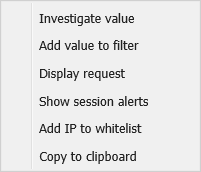
From the menu, select one of the options:
|
Option |
Description |
|
Investigate value |
Add the field and its value to the filter and display the results. |
|
Add value to filter |
Add the selected value to the filter, but do not display the results. |
|
Display request |
Display the request data in a separate window. |
|
Show session alerts |
Display the Alerts tab for any alerts triggered by the selected request. |
|
Add IP to whitelist |
Add the request’s source IP address to the IP whitelist. |
|
Copy to clipboard |
Copy the text of the selected field to the clipboard. |
The Business Actions screen enables you to record workflows users may follow, such as navigating to certain pages and filling in forms on a web page. This way, the next time a recorded workflow is detected by Telepath, the system will know how to label the action taken by the user. For example, in an eCommerce site – "Add to Shopping Cart", and in a banking site – "Transfer Money" or "Check Balance".
To record a business action:
Open the Business Actions screen.
In Nodes list, expand the application in which you want to record.
Click Record new Action.
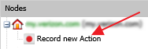
The Flow Record window is displayed with a link to the application and a temporary access token (e.g. "http://www.example.com/?hybridrecord=75"). The link can be viewed from a different browser or device
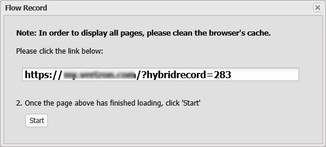
Click the link. A web browser opens, displaying the web page.
Navigate to the web page on which you want to start recording.
Return to the Flow Record window and click Start.
Perform the actions you want to record (i.e. navigate to the appropriate web pages, fill in web forms).
To finish, return to the Flow Record window and click Stop.
The sequence of events (pages) is displayed in the Session Flow pane in a series of windows with each window representing a separate event.
Review the business action recording by clicking the appropriate
event box, clicking the
 button and manually typing the new value.
button and manually typing the new value.
For example, changing the username value specified in a registration form to an asterisk (*) in order to allow all usernames.
Click the Settings tab to display a list of the configuration options:
|
Option |
For more information, see |
|
Administration |
Error: Reference source not found |
|
Network |
Error: Reference source not found |
|
Operation Mode |
Error: Reference source not found |
|
Reports |
Error: Reference source not found |
|
Web Applications |
Error: Reference source not found |
If you change any of the configuration options, remember to click the Save button in the Settings toolbar.
To display the configuration parameters for any of these options, click the appropriate tab:
Settings tab options
The Administration tab enables you to create, edit and remove Telepath users and user groups, as well as view Telepath activity logs. This is meant for a multi-tenant environment and allows you to control user access to Telepath information on a need-to-use basis.
To create a new Telepath user:
Select the Administration tab.
Click the Users button. The Telepath Users window is displayed, listing all existing Telepath users.
Click Add User. The User Editor dialog is displayed.

Select the Active checkbox to enable the user.
Fill in the user’s general details (Login, Email, etc.)
In the Permissions area, assign access permissions to the user.
Select a permission and click the appropriate button:
View – Allows the user to view but not modify Telepath data.
Modify – Allows the user to modify Telepath data and system settings.
Add – Allows the user to add Telepath data and system settings.
Delete – Allows the user to remove Telepath data and system settings.
In the Group Selection area, select the group(s) the user belongs to.
In the Applications area, select the applications this user can access or select All to grant the user access to all applications.
Click Save User.
To edit an existing Telepath user:
Select the Administration tab.
Click the Users button. The Telepath Users window is displayed, listing all existing Telepath users.
Click a user. The User Editor dialog is displayed.
Select/deselect the Active checkbox to enable or disable the user, respectively.
Edit the user’s settings, as appropriate.
Click Save User.
To delete an existing Telepath user:
Select the Administration tab.
Click the Users button. The Telepath Users window is displayed, listing all existing Telepath users.
Click a user. The User Editor dialog is displayed.
Click the Delete button.
To view a Telepath user’s activity:
Select the Administration tab.
Click the Users button. The Telepath Users window is displayed, listing all existing Telepath users.
Click a user. The User Editor dialog is displayed.
Click the View Activity button. The user's activity log is displayed.
To add a new group:
Select the Administration tab.
Click the Groups button. The Telepath Groups window is displayed, listing all existing Telepath groups.
Click Add Group. The Group Editor dialog is displayed.
Specify a Name and Description for the group.
In the User Selection area, select the users you wish to assign to this group.
In the Permissions area, select the access permissions you wish to grant all group members.
Click Save Group.
To edit an existing Telepath user:
Select the Administration tab.
Click the Groups button. The Telepath Groups window is displayed, listing all existing Telepath groups.
Click a group. The Group Editor dialog is displayed.
Edit the user’s settings, as appropriate.
Click Save Group.
To delete an existing Telepath group:
Select the Administration tab.
Click the Groups button. The Telepath Groups window is displayed, listing all existing Telepath groups.
Click a group. The Group Editor dialog is displayed.
Click the Delete button.
To view a Telepath group’s activity:
Select the Administration tab.
Click the Groups button. The Telepath Groups window is displayed, listing all existing Telepath groups.
Click a group. The Group Editor dialog is displayed.
Click the View Activity button. The group's activity log is displayed.
The activity log comprises the activity of all Telepath system users (for web users, use the Error: Reference source not found tab), for auditing purposes.
To view the Telepath activity log:
Select the Administration tab.
Click the Activity Log button. The Telepath Activity Log is displayed, listing all user actions performed in Telepath.
The Network tab consists of the following panes:
|
Field |
For more information, see |
|
Load Balancer IPs |
Error: Reference source not found |
|
Load Balancer Headers |
Error: Reference source not found |
|
SMTP Configuration |
Error: Reference source not found |
|
IP Whitelist |
Error: Reference source not found |
|
User Agent Ignore List |
Error: Reference source not found |
|
Extension Ignore List |
Error: Reference source not found |
|
Proxy Configuration |
Error: Reference source not found |
|
Network Interfaces |
Error: Reference source not found |
The Load Balancer IPs pane displays a list of the IP addresses of a load balancer positioned in front of the Telepath server.
Load balancer IPs pane
This pane’s parameters are described below.
|
Field |
Description |
|
Web servers are behind a load balancer |
Check if the Telepath server is behind a load balancer. |
|
IP |
Enter the IP address of the load balancer and click Add. |
The list of load balancer IP addresses is displayed in the list below.
To change an IP address, select it in the list and click .
To delete an IP address, select it in the list and click .
Load Balancer Headers pane
This pane’s parameters are described below.
|
Field |
Description |
|
Header |
Enter the ID of the header field added by the load balancer that specifies the web client’s IP address and click Add. |
The list of load balancer headers is displayed in the list below.
To change a header, select it in the list and click .
To delete a header, select it in the list and click .
The SMTP Configuration pane enables the administrator to set the SMTP server settings.
|
Field |
Description |
|
SMTP Server |
The IP address of the SMTP server Telepath uses for outgoing email on SMTP Server. |
|
Port |
Port Telepath uses for outgoing email. |
|
User Name |
The user name of the Telepath email account on SMTP Server. |
|
Password |
The password of the Telepath email account. |
The IP Whitelist pane displays the IP addresses from which Telepath should ignore all traffic. These typically represent network management tools.
IP Whitelist pane
This pane’s parameters are described below.
|
Field |
Description |
|
IP |
Enter an IP address from which Telepath should ignore traffic and click Add. |
The list of whitelist IP addresses is displayed in the list below.
To change a whitelist IP address, select it in the list and click .
To delete a whitelist IP address, select it in the list and click .
The Proxy Configuration pane specifies whether the management LAN’s Internet traffic requires a proxy server.
Proxy Configuration pane
This pane’s parameters are described below.
|
Field |
Description |
|
Proxy |
Set Proxy to On if the management LAN’s Internet traffic requires a proxy server. |
|
IP Address |
The proxy server’s IP address. |
|
Port |
The proxy server’s proxy port. |
For syslog alerts to be sent, the Remote Syslog Server must be defined.
User Agent Ignore List pane
Use the Network Interfaces pane to define the sniffers to be used by Telepath.
If multiple sniffers have been defined, Telepath will use them for connection to different networks on the same machine. Multiple sniffers require multiple network interfaces to be installed on the machine.
|
|
It is recommended to have at least two network interfaces, one for sniffing traffic and one to manage Telepath. |
User Agent Ignore List pane
The User Agent Ignore List pane displays the user agents (typically "harmless" bots) whose traffic Telepath should ignore.
User Agent Ignore List pane
This pane's parameters are described below.
|
Field |
Description |
|
User-Agent |
Enter the name of the user-agent and click Add. |
The list of user-agents is displayed in the list below.
To change a user-agent, select it in the list and click .
To delete a user-agent, select it in the list and click .
The Extension Ignore List pane displays the file extensions (e.g. of graphic files) which Telepath should ignore.
Extension Ignore List pane
This pane's parameters are described below.
|
Field |
Description |
|
Extension |
Enter a file name extension which Telepath should ignore traffic and click Add. |
The list of file name extensions is displayed in the list below.
To change a file name extension, select it and click .
To delete a file name extension, select it and click .
This pane specifies the Telepath operation mode, and in the case of Hybrid mode, the times during which learning takes place.
Operation Mode pane
This pane’s parameters are described below.
|
Field |
Description |
|
Operation Mode |
Operation Mode can be one of:
|
|
Hybrid Mode schedule |
In Hybrid mode, Telepath monitors traffic while continuing to learn. You can specify during which days and hours the learning will take place. |
|
Stop Learning when number of requests reaches |
(Relevant for Hybrid and Training mode) The number of requests Telepath processes before it switches to production mode. |
If you change Operation Mode to Training from Production or Hybrid, you will be asked to choose whether to save the knowledge database or to delete it, that is, to forget everything that Telepath has learned by monitoring your site’s traffic.
Backup or delete database
To save the database, click Backup database. This may take some time to complete.
If you click Delete database, Telepath will forget everything it has learned and will begin learning from scratch.
|
|
You should delete the database only in exceptional circumstances. Once deleted, the database cannot be easily restored.
|
The Report Format pane defines the parameters related to the reports periodically generated by Telepath.
Report Format pane
This pane’s parameters are described below.
|
Field |
Description |
|
On / Off |
On means that Telepath generates reports. Off means Telepath does not generate reports. |
|
Report Frequency |
How frequently to produce the report. |
|
Maximum Events |
The maximum number of alerts to be included in each report. |
|
Time Window Back |
The report will include alerts from the time of the report and the specified prior period. |
|
By Saved Filter |
Select By Saved Filter if the report is to include only alerts specified by the selected filter. |
|
Rules tree |
Select a rule or set of rules if the report is to include only events in which the anomaly belongs to the selected rule(s). |
|
All Events |
Select All Events if the report is to include all alerts during the specified period. |
|
Configure Schedule |
Specify the days of the week and hours during which to produce the report. |
The Web Applications window specifies information about the web applications monitored by Telepath, and consists of the following panes:
|
Field |
For more information, see |
|
Web Application List |
Error: Reference source not found |
|
Web Application General |
Error: Reference source not found |
|
Web Application Authentication |
Error: Reference source not found |
|
Web Application SSL |
Error: Reference source not found |
|
Web Application Advanced |
Error: Reference source not found |
Web Applications window
The left pane of the Web Applications window displays a list of the web applications Telepath has learned by monitoring web traffic.
Web Applications - List pane
If you select an application from the list, its details are displayed in the Web Application General pane on the right.
This pane’s parameters are described below.
|
Field |
Description |
|
Add a new application to Telepath. |
|
|
Set Telepath to learn new applications automatically when in Hybrid mode. |
|
|
Search the Nodes list for an application, page or parameter. |
|
|
|
Upload Apache or IIS logs to speed up the training process. |
|
Delete the selected application from Telepath. |
|
|
Refresh the Nodes list. |
To create a new application:
Click . The Add Application dialog is displayed in the General tab.
Fill in the application's General details. For more information, see Error: Reference source not found.
Click Authentication at the bottom to fill in the application's authentication details. For more information, see Error: Reference source not found.
Click SSL at the bottom to fill in the application's SSL details. For more information, see Error: Reference source not found.
Click Advanced to fill in the application's advanced details. For more information, see Error: Reference source not found.
Click Save.
Click OK in the confirmation message that appears.
To edit an existing application's settings:
Select the application from the Nodes list. The Application Configuration pane opens.
Edit the application's settings, as explained in the section above.
Click Save.
To search for an application, page or parameter:
In the field, specify all or part of the item's name.
Select the type of item you want to find (Page, Param or App).
Click Search.
Application log files speed up the training process. After uploading the log file, the system reads (parses) the logs and learns what common web application pages the user is accessing.
To upload a log file:
Click
 .
A browse window is displayed.
.
A browse window is displayed.
Browse for the file.
Select the appropriate Log Type.
Click Start.
|
|
If multiple applications are selected, the one appearing highest in the Nodes list will be deleted. |
To delete an application:
Select the application from the Nodes list.
Click .
Click OK in the confirmation message.
The Web Application General pane displays the details of the application selected in the left pane of the Web Applications window.
Web Applications - General pane
This pane’s parameters are described below.
|
Field |
Description |
|
Display Name |
These fields correspond to the fields with the same names in the left pane. |
|
Application Domain |
|
|
Cookie Name |
Specify the name of a cookie unique to each session. Select a name from the drop down menu or enter a name in the text box, and click Add. |
|
Add New IP |
The IP address of the server hosting the application. If there are multiple servers, add them all and click Add. If the servers are behind a load balancer, specify the IP address before the load balancer, that is, the IP address to which the Application Domain resolves. |
Web Applications – Authentication pane
The Web Application - Authentication pane specifies the user authentication method used by the application and optionally, the success criteria. Telepath needs this information in order to extract the user’s name from the web traffic.
This pane’s parameters are described below.
|
Field |
Description |
|
User Identification |
Select one of the methods listed. |
|
Success Criteria |
Select On or Off and then specify the method for Telepath to use to determine whether authentication was successful. If you can select multiple methods, they are OR’ed. |
|
Cookie |
If Cookie is selected, then:
|
|
Redirect |
If Redirect is selected, authentication is considered to have been successful if the application redirects the client to Page and the response status is between the specified values. |
|
Body Value |
If Body Value is selected, authentication is considered to have been successful if the application’s specified response contains Value to search in HTML body. |
The Web Application - SSL pane specifies the SSL certificate and private key used by the application. Telepath needs this information in order to decrypt the application’s traffic.
Web Applications - SSL pane
This pane’s parameters are described below.
|
Field |
Description |
|
SSL |
Specify whether SSL is On or Off. |
|
Certificate |
If SSL is On, specify the name of the certificate file and, optionally, the Private Key file in the event that the private key is stored in a different file from the certificate. |
|
Private Key |
|
|
Server Port |
The port the application server uses for SSL. |
|
Certificate Password |
The password required to extract the private key from either the certificate file or the private key file. |
Web Applications – Advanced pane
The Web Application - Advanced pane defines Telepath functionality, and consists of the following sections:
|
Field |
For more information, see |
|
Application Global Pages |
Error: Reference source not found |
|
API Settings |
Error: Reference source not found |
The Application Global Pages are defined when the application generates multiple pages with different URLs which should be considered by Telepath to be a single page. For example, an application might generate differently named URLs for each item in the vendor price list, where the URL includes an ISBN number (for books) or an SKU (for catalog items), but from Telepath’s point of view, all these pages are functionally identical and there is no need to track each one individually. Instead, all of them are treated by Telepath as if they were the same page.
|
Field |
Description |
|
Regular Expression |
A regular expression that describes the variable part of the URL, for example, the catalog number. |
The API Settings are defined when a Telepath agent installed on the application server which injects a header into the incoming web traffic which the application recognizes as a signal to terminate the session. Communication between the Telepath agent and Telepath is initiated by the agent.
For more information, see Error: Reference source not found.
|
Field |
Description |
|
Injected Header Name |
The name of the header. |
|
Session Clear Cookie Name |
The name of the cookie sent by the web server that indicates the session is to be cleared. |
|
Session Clear Cookie Value |
The cookie value that indicates that the session has ended. |
|
|
Implementation of this feature requires changes to the web application. |
Click the Settings tab to display a list of the configuration options:
|
Option |
Description |
|
Administration |
Error: Reference source not found |
|
Network |
Error: Reference source not found |
|
Operation Mode |
Error: Reference source not found |
|
Reports |
Error: Reference source not found |
|
Web Applications |
Error: Reference source not found |
If you change any of the configuration options, remember to click the Save button in the Settings toolbar.
To display the configuration parameters for any of these options, click the appropriate tab:
Settings tab options
Forex Fraud
A user attempts to convert the smallest possible amount of a weak currency into a much stronger one. For example, converting 0.01 Russian rubles into British pounds.
Assuming that 0.01 Russian rubles are worth 0.0000199 British pounds, there is no British currency unit that can do this. So in such a situation, the Forex agency might mistakenly exchange 0.01 Russian rubles to 0.01 British pounds (the British currency unit closest to 0.01 Russian rubles), thereby giving the user a 500 % return above the correct amount.
To define this rule:
Create a rule with a meaningful name (e.g. "Forex Fraud") and set the alert Action (e.g. "Syslog").
Add a Parameter criterion to the rule.
Specify the appropriate Check Level(s) (e.g. which application to check this rule against).
Set the Trigger Alert After field to 10.
Click Next.
In the Parameter Criterion screen, do the following:
Browse for the appropriate Page Parameter (e.g. "exchange-amount").
In the String Inspection area, make sure Heuristic is selected.
Click Submit.
Web Scraping
A business competitor is attempting to copy the website contents record by record (email addresses, phone numbers and prices). The competitor searches for a specific value (e.g. aa) and changes it by one character each time. To avoid detection, the competitor does 10 searches from a different IP address.
For example:
|
Aa |
ba |
Ca |
|
Ag |
bs |
Ct |
|
An |
bm |
Cn |
To define this rule:
Create a rule with a meaningful name and set the alert Action.
Add a Parameter criterion to the rule.
Set the appropriate Check Level.
Set the Trigger Alert After field to 3 (aggregate of events)
Select the appropriate Page Parameter (e.g. "Search").
In the string Inspection area, select Parameter values differ by and set it to 1.
Click Submit.
Add another Parameter criterion to this rule with the same Trigger Alert After and Page Parameter values.
In the String Inspection area, select Fuzzy Length and set it to Short (to show that the competitor is searching for short terms, one character apart).
Click Submit.
Request Tampering
A user has a coupon for a hamburger and a beverage, however this coupon provides a cheap beverage while the user wants to obtain a more expensive one, such as a beer. In the form submission, the user injects a value that is not available in the beverage selection field.
Since Telepath automatically learns the commonly used values for the field, it would render it anomalous.
To define this rule:
Create a rule with a meaningful name and set the alert Action.
Add a Parameter criterion with the appropriate Check Level(s).
Click Next.
Browse for the appropriate Page Parameter (e.g. "Beverage Selection").
In the String Inspection area, make sure Heuristic is selected.
Click Submit.
Testing stolen credit cards
A fraudster is attempting to "test" credit cards by entering a different credit card each time.
For example:
|
349604481693306 341647556447064 |
378345060741611 370741047709648 |
344770708832913 398565060741611 |
To define this rule:
Create a rule with a meaningful name and set the alert Action.
Add a Pattern criterion with the appropriate Check Level(s).
Click Next.
In the Pattern Criterion screen, do the following:
In the Anchor area, select IP.
Browse for the appropriate Page (e.g. "credit-card-number").
Set Count to 5 and Time Window to 72 Hours.
Click Submit.
eCoupon Abuse
A user is attempting to use 10 different coupons in the same session.
To define this rule:
Create a rule with a meaningful name and set the alert Action.
Add a Pattern criterion with the appropriate Check Level(s).
Click Next.
In the Pattern Criterion screen, do the following:
In the Anchor area, select SID (same session).
Browse for the Page on which the coupon is entered.
Set Count to 10 and Time Window to 24 Hours.
Click Submit.
Account hijacking: Man-in-the-browser
Multiple rapid money transfers using account takeover.
A fraudster has hijacked a bank account by using stolen credentials or installing a man-in-the-browser Trojan horse and is attempting to make 10 different money transfers from the hijacked account in 15 minutes.
To define this rule:
Create a rule with a meaningful name and set the alert Action.
Add a Pattern criterion with the appropriate Check Level(s).
Click Next.
In the Pattern Criterion screen, do the following:
Select the appropriate Anchor.
In Repeating Action, browse for the appropriate business action (e.g. "Money Transfer" assuming a "Money Transfer" business action has been recorded.
Set Count to 10 and Time Window to 15 Minutes.
Click Submit.
Mass Registration
A fraudster is attempting multiple registrations from the same IP over a short period of time.
To define this rule:
Create a rule with a meaningful name and set the alert Action.
Add a Pattern criterion with the appropriate Check Level(s).
Click Next.
In the Pattern Criterion screen, do the following:
In the Anchor area, select IP.
Browse to the appropriate Page (e.g. registration page).
Set Count to 5 and Time Window to 72 Hours.
Click Submit.
eFraud Hotspots
Alert when requests originate from countries known to have high levels of fraudulent activity. For example, Nigeria.
To define this rule:
Create a rule with a meaningful name and set the alert Action.
Add a Geographic criterion with the appropriate Check Level(s).
Click Next.
Select User Origin Inside, select Nigeria and move it into the Selected pane.
Click Submit.
Session velocity
A fraudster goes online and changes geographic locations in a short period during the same session. This might suggest that either the session being used has been hijacked by a fraudster or the fraudster is attempting to mask his true origin by rapidly changing locations.
To define this rule:
Create a rule with a meaningful name and set the alert Action.
Add a Geographic criterion with the appropriate Check Level(s).
Click Next.
Select Geographic Velocity, set Time to 60 seconds and Distance to 10 km.
Click Submit.
Fake Account Registration
Discrepancies between registration details and geographic origin of the IP address: a fraudster is using a British email address (ending with .co.uk) to log in to the application while the login action appears to be originating from a different country (e.g. Nigeria) in the same session.
To define this rule:
Create a rule with a meaningful name and set the alert Action.
Add a Parameter criterion.
Click Next.
Select the appropriate Page Parameter (e.g. "Country").
In the String Inspection area, select String Contains and specify "United Kingdom". This will check all requests including the string "United Kingdom".
Click Submit.
Add a Geographic criterion.
Click Next.
Select User Origin Outside of, select United Kingdom and move it into the Selected pane.
Click Submit.
Unusual Geographic Location
A user of the application who has always logged in from his home in Canada is attempting to log in from Nigeria.
To define this rule:
Create a rule with a meaningful name and set the alert Action.
Add a Behavior criterion to the rule.
In the Score Type area, set a Numeric score of 95 (to look for requests with a risk score of 95% or higher).
Click Next.
From the Aspect Value drop-down list, select Location.

Click Submit.
Suspicious User Action
An account holder is attempting to transfer all funds from his bank account to a bank in Nigeria.
To define this rule:
Create a rule with a meaningful name and set the alert Action.
Add a Behavior criterion to the rule.
In the Score Type area, set a Numeric score of 95 (to look for requests with a risk score of 95% or higher).
Click Next.
From the Aspect Value drop-down list, select Query.
Click Submit.
The following rules have multiple criterions. As such, a rule is triggered only if all criterions are matched.
Suspiciously behaving bots
An IP address has been infected with a spyware program that installed a freeware that transparently installed a toolbar on the system. A user originating from the infected IP address is performing suspicious actions, such as abnormal click speeds and transferring suspicious amounts of money.
Conditions:
User's click speed is abnormally fast
User attempts to transfer a suspicious amount of money
Result: Scenarios where both conditions exist suggest that a bot is performing these actions.
To define this rule:
Create a rule with a meaningful name and set the alert Action.
Add a Behavior criterion to the rule.
Call it "Click Speed".
In the Score Type area, set a Numeric score of 95 (to look for requests with a risk score of 95% or higher).
Click Next.
From the Aspect Value drop-down list, select Speed.
Click Submit.
Add a Parameter criterion.
Call it "Suspicious Money Transfer".
Click Next.
Browse for the appropriate Page Parameter (e.g. "Amount").
Click Submit.
Mass registration attempts directed at one page (layer-7 DoS)
A fraudster is attempting to flood the system with massive amounts of registration requests in order to consume as much of the site's resources as possible so that legitimate users are denied service.
User performs suspicious actions
User performs a high number of requests in a short period
To define this rule:
Create a rule with a meaningful name and set the alert Action.
Add a Behavior criterion to the rule.
Call it "Suspicious Actions".
In the Score Type area, set a Numeric score of 95 (to look for requests with a risk score of 95% or higher).
Click Next.
From the Aspect Value drop-down list, select Query.
Click Submit.
Add a Pattern criterion.
Call it "Requests".
Click Next.
From the Anchor area, select IP.
Browse for the appropriate Page (e.g. "Registration Request").
Set the Count to 50 and Time Window to 1 Minute.
Click Submit.
If Telepath Engine doesn’t start after installation, (green “On” button on the tab bar), open command-line and run: “Telepath Start”
Index
aspect criterions 32, 48
behavior criterions 32, 48
bot-intelligence criterions 36, 52
criterions
deleting 37, 53
editing 37, 53
dashboard 53
disabling criterions 36, 52
engine 38
geographic criterions 35, 51
heuristic algorithms 30, 47
hot spots 55
hybrid mode 39
parameter criterions 30, 47
pattern criterions 32, 49
production mode 39
rules
creating 28, 44
scraping attacks 31, 48
session ID 59
status 38
training mode 39